1 x Arduino Nano
1 x Micro Servo Motor
1 x Ultrasonic Sensor
2 x DC Motor w/ wheels
1 x TB6612FNG H-Bridge
6 x 1.5v AA batteries
My work.
Select below to check out some of my projects.
Here you can find examples of the work I have created in my first year of study.
Fun and games with ones and zeros.
This course taught how to code through the production of interactive art. We covered concepts such as using code to draw simple shapes, responding to user input, understanding the physics required to produce simple simulations, and how to apply filters to video and images in real-time. I developed a strong understanding of the fundamentals of coding, the use of mathematics in code as well as the ability to apply them to generative art, data visualisation, and interactive animations by utilising a Javascript based language, P5.js.
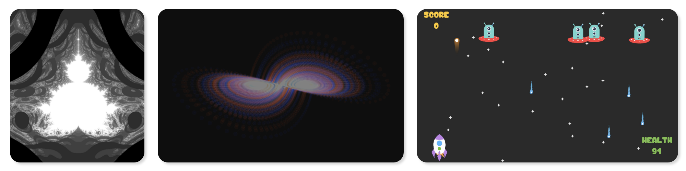
I loved this course so much, I went on to complete "The Nature of Code" by Dan Shiffman. This online course took the skills I had learnt an extra step further with developing visualisations of Newtonian physics systems, Autonomous Agents and Steering Behaviours with the P5.js library. For my final project I created a simulation using Genetic Algorithms that applies the four mechanisms found in genetics and evolutionary biology (Hardy Weinberg Principle, Genetic Drift, Selection and Mutation). You can view this project below.
Learning Outcomes:
1. Created interactive programs by understanding the graphics pipeline and handling user events.
2. Solved programming problems that involve simple programming constructs such as variables, sequence, selection, iteration, and arrays.
3. Developed software which is able to transform data over the network into visualisations and sonic experiences.
4. Analysed and designed a modular program using functions and objects.
5. Integrated visualisations into web pages using JavaScript libraries.
Introduction to Robotics.
This course introduced me to the underlying architecture and principles of modern robotic hardware, software, and communication that build the foundation of modern Intelligent Systems. The course provided the knowledge of how components work together to define a system, and gave me an appreciation of the capabilities and limitations of computer and robotic systems. This knowledge assisted me in the design and development of using technologies to solve problems and provided a foundation for further study in the field of robotics.
I applied this knowledge to develop intelligent robots and IoT devices. I designed and simulated a robot that creates a symbiosis with beneficial bacteria and fungi based on how the human nervous system connects with the stomach. The robot was designed to connect to the internet to order food and feed itself.
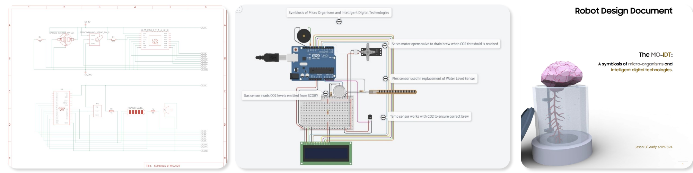
I also produced a short 1000 word report surrounding the future of autonomous vehicles and projected when we will see Level 5 fully self driving cars on our roads. You can click below to view the entire report.
Learning Outcomes:
1. Gained an understanding of robotic and IoT mechanisms in general.
2. Developed basic and moderate knowledge of the use and capabilities of microcontrollers, sensors and actuators.
3. Applied best practice processes to robot/IoT design and development.
4. Demonstrated critical awareness of key issues related to robot and IoT development.
Peaking into the sustainable future of our planet.
I became acquainted with the nature of emerging digital technologies, and investigated how we can use these technologies to not only simplify, but also improve people's lives. With an emphasis in the development of problem-solving and communication, alongside base knowledge, these capacities enabled me to become both a participant and creator of the future digital world.
I spent each week designing sustainable technologies for use across mobile technologies, eLearning, eHealth, eCommerce, 3D printing, Robotics, Autonomous Vehicles, Artificial Intelligence (AI), Internet of Things (IoTs) and developed prototypes for Augmented Reality applications.
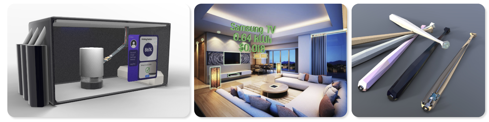
Learning Outcomes:
1. Displayed the ability to describe capabilities of various emerging technologies and how multimedia design helps the users use the technologies efficiently and effectively.
2. Identified the social impact of digital interactive technologies on society at global, local and personal levels in contexts such as business, education, entertainment, industry and medicine.
3. Critically analysed the effectiveness of an emerging technology system by assessing the appropriateness of interface, implementation and interaction.
4. Designed innovative technology concepts for an identified need/purpose using knowledge of digital emerging technologies alongside knowledge of design and human characteristics.
Applications to help those in need.
In this course, I became versed in how systems thinking can be used to tackle almost any problem imaginable, in order to identify the requirements (systems analysis) and find solutions to meet them (systems design). This course provided me with software development and acquisition competencies that are the underpinnings of ICT and Computer Science. I learnt how to plan the development of an information system, how to analyse and discover requirements, and then select the optimal design solution. Working in a team, we managed the system development processes by adopting an Agile methodology, currently a widely used project management approach applied in industry for software development.
We designed the front and backend application for Meals on Wheels Australia using these tools and delivered the costings, estimated revenue projections and project timeframe for a mobile / web application that helps both the business and their clients in streamlining the processes required in providing food and services to those who experience disability and / or require aged care assistance.
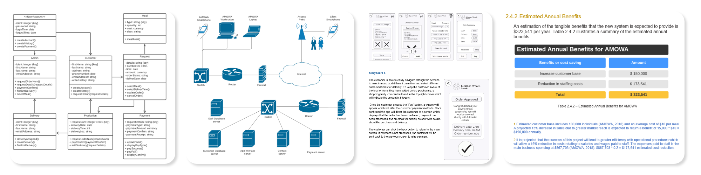
Learning Outcomes:
1. Demonstrated through the use of project management tools the ability to undertake a risk analysis, cost benefit analysis, estimate a budget and propose a project schedule for an information system and software development project.
2. Used the Agile methodology to plan typical software development / acquisition activities.
3. Applied appropriate techniques for requirements specification and process modelling.
4. Applied techniques to document appropriate system models and software requirements.
5. Explained techniques for implementation, testing, deployment, maintenance and revision.
Gazing into data from the past to help us today.
This course introduced me to the fundamental techniques required to develop and implement software systems in industry. I was exposed to key technologies to support the software system development process and utilised software tools to process, analyse and visualise business data for communication and collaboration purpose.
Linked by data analysis and presentation tasks, this course used project management, scripting techniques, version control, and software testing to create desktop applications that make it simple to display visualisations of complex data for analytical purposes and heuristic interpretations to effectively communicate outcomes.
Working with another team member, we brought together the skills we had learnt and used the programming language Python to develop data visualisation software based around vehicle accidents in Victoria from 2013 to 2019.
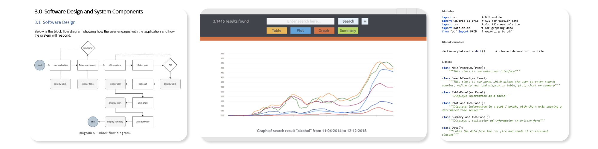
Learning Outcomes:
1. Identified key scripting languages used for various platforms.
2. Wrote, debugged and tested scripts that includes selection, repetition and parameter passing.
3. Initiated, planned, executed, documented, monitored, controlled, and closed a project.
4. Described the importance of version control and its mechanism of action.
5. Used version control software to create, modify and test a software application and its modules.
6. Described and applied the principal approaches to software testing.
7. Planned, analysed, designed, implemented, executed and evaluated the testing of a software system.
8. Created documents, spreadsheets, and presentations using data presentation software.
9. Wrote code to access and retrieve data from SQL databases and presented the data in a simple coded graphical interface.
10. Used a scripting language to process and present data in a variety of formats.
Training AI to help us during the COVID19 pandemic.
This course introduced me to the theory of Big Data and the analytical tools used for the implementation of the process of data to decisions (D2D). I was taught various Big Data formats, NoSQL Databases, processing platforms (Hadoop) and data analytics tools (Tableau and R) to transform, visualise, model, and communicate the insights hidden in the data. I developed the knowledge and skills that lay the foundations for more in-depth data analytics that allow one to make informed decisions across various industries.
This introductory course had me apply the fundamentals of Big Data and it's applications with databases using data validation techniques, along with training Artificial Intelligence (AI) models to produce findings based on current COVID19 data collected from India.
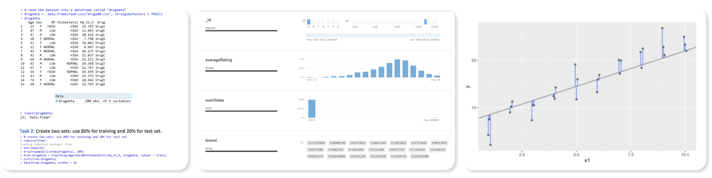
Learning Outcomes:
1. Applied the principles of big data analytics in the data science process.
2. Explained the seven V's of Big Data and how each impacts the data science process.
3. Applied transferable skills across big data formats including big data processing platforms.
4. Explored data using NoSQL queries in the MongoDB database.
5. Applied AI and Big Data Analytics algorithms to discover interpretable insights for organisations.
Obstacle Avoidance Vehicle.
Since my introduction to robotics I've been wanting to make an autonomous vehicle. There's something about perception that interests me greatly and I really want to understand it better. So I set myself the task of developing a small obstacle avoidance vehicle using an arduino microcontroller.
This is what we're aiming for:
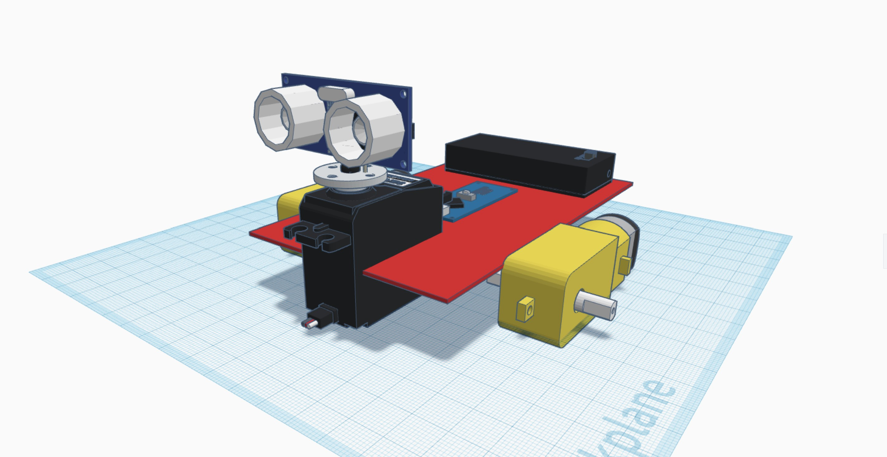
The plan is to incorporate what I've learnt so far with basic sensors and challenge myself to create the code from beginning to end. Below I'll talk you through the process I underwent through the development and I've included all the components and code you need if you want to make one yourself.
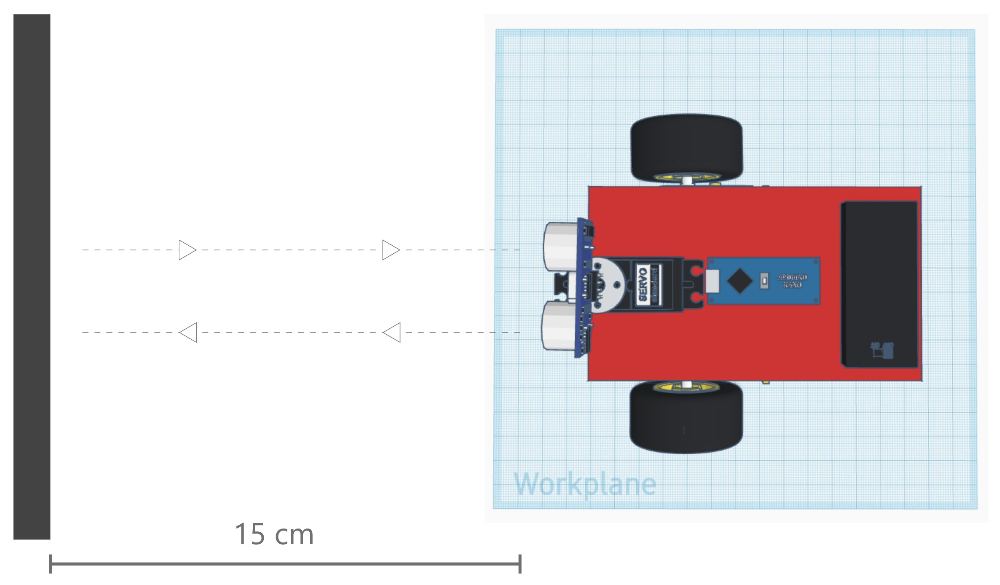
The way in which our vehicle will operate is quite simple, it will drive forward and the ultrasonic sensor will keep measuring the distance from the vehicle to an obstacle. If it detects a collision, the vehicle will stop, look to it's left and right and change it's trajectory based on which side has the greater distance. Let's start with planning.
The required hardware is easily accessible and inexpensive, you can find them at a local JayCar or online through sites like eBay.
Discover and understand the details of all aspects of the problem
- Check component compatibility
- Check voltage and current requirements / limitations
- Develop workflow
Design the components of the solution to the problem
- Design breadboard layout and connections
- Design program details
- Simulate robot
Build the components and integrate everything into the solution
- Solder / set up required components
- Code and test single components
- Connect hardware as per simulation
- Code and test integrated system
Perform all system-level tests and then deploy the solution
- Perform system functionality tests
- Perform user acceptance test
- Complete documentation
We'll use the Arduino Nano microcontroller as it encompasses the right amount of PWM pins required for the project in a small form factor.

We'll use the TB6612FNG motor driver. Being fitted with MOSFETs, it will lead to a considerably lower energy requirement when compared to the more widely used L293D chip, allowing us to remain energy efficient.
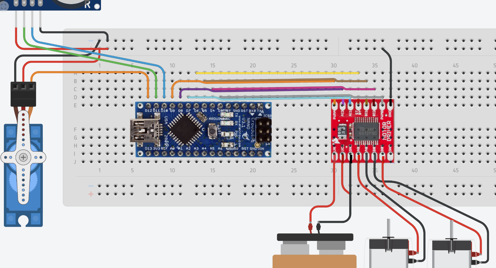
This is the breadboard design implemented in the early stages of planning. Modifications to this design were made during the testing process and can be viewed further down in the documentation.
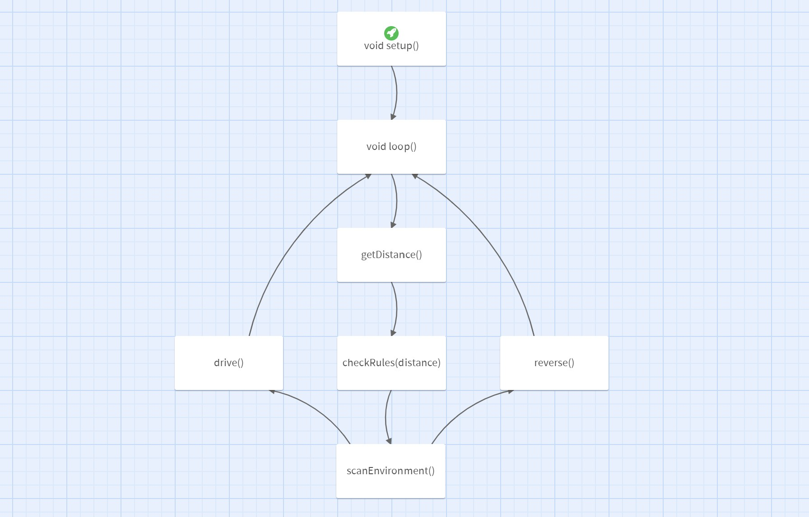
I utilised Twine to configure a rough workflow of how the code will be written for our robot. Again, changes were made during testing to reduce complexity and are reflected below in the final code.
The components will be tested individually to ensure they are in working order and to reduce troubleshooting in the later stages of the project when the level of complexity has grown. Once all hardware and programming has been completed, the system will be built as a whole and code will be integrated into a single file.
Test Servo Motor
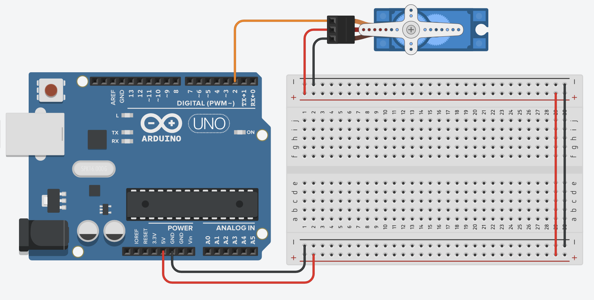
#include <Servo.h>
int servoPin = 10;
int servoPos = 0;
Servo myServo;
void setup() {
Serial.begin(9600);
myServo.attach(servoPin);
}
void loop() {
myServo.write(servoPos);
}Test Ultrasonic Sensor
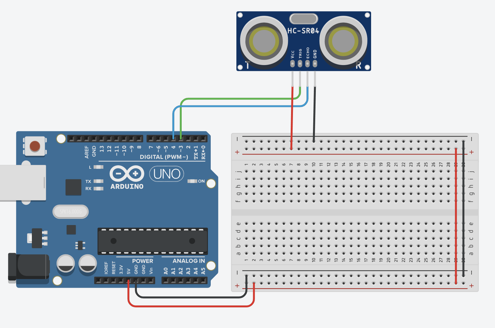
#include <NewPing.h>
const int trigPin = 11;
const int echoPin = 12;
int dist = 0;
NewPing sonar(trigPin, echoPin, 200);
void setup() {
Serial.begin(9600);
}
void loop() {
dist = sonar.ping_cm();
Serial.println(dist);
delay(100);
}Test H-Bridge / DC Motors
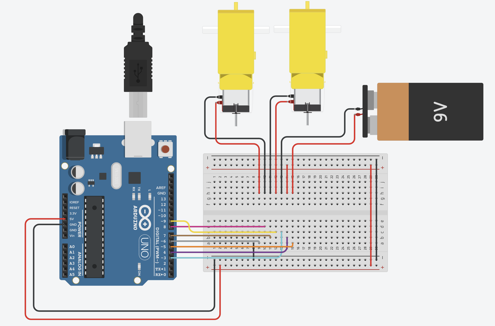
#include <SparkFun_TB6612.h>
#define AIN1 3
#define BIN1 7
#define AIN2 4
#define BIN2 8
#define PWMA 5
#define PWMB 6
#define STBY 9
const int offsetA = 1;
const int offsetB = -1;
Motor motor1 = Motor(AIN1, AIN2, PWMA, offsetA, STBY);
Motor motor2 = Motor(BIN1, BIN2, PWMB, offsetB, STBY);
void setup() {}
void loop() {
motor1.drive(255, 1000);
motor2 .drive(255, 1000);
delay(1000);
}Integrate code into single file. You are free to use this code if you are building along at home.
// Obstacle Avoiding Vehicle
// Jason O'Grady 2022
#include <Servo.h>
#include <SparkFun_TB6612.h>
#include <NewPing.h>
#define PWMB 3
#define BIN2 4
#define BIN1 5
#define STBY 6
#define AIN1 7
#define AIN2 8
#define PWMA 9
const int servoPin = 10;
const int trigPin = 11;
const int echoPin = 12;
const int offsetA = 1;
const int offsetB = -1;
Motor motor1 = Motor(AIN1, AIN2, PWMA, offsetA, STBY);
Motor motor2 = Motor(BIN1, BIN2, PWMB, offsetB, STBY);
Servo servoMotor;
NewPing sonar(trigPin, echoPin, 200);
int dist = 100;
void setup() {
Serial.begin(9600);
servoMotor.attach(servoPin);
motor1.brake();
motor2.brake();
delay(1500);
forward(motor1, motor2, 255);
}
void loop() {
if (dist <= 15) {
forward(motor1, motor2, 255);
delay(100);
dist = getDistance();
loop();
} else if (dist > 15 && dist <=40) {
brake(motor1, motor2);
delay(100);
for (int i = 0; i <= 170; i=i+25) {
servoMotor.write(i);
}
delay(100);
int l = getDistance();
Serial.print("Left: ");
Serial.println(l);
for (int i = 170; i >= 0; i=i-25) {
servoMotor.write(i);
}
delay(100);
int r = getDistance();
Serial.print("Right: ");
Serial.println(r);
servoMotor.write(90);
delay(500);
if (l > r) {
Serial.println("Turn Left");
motor1.drive(255);
delay(100);
motor2.drive(-255);
delay(100);
} else {
Serial.println("Turn Right");
motor2.drive(-255);
delay(100);
motor1.drive(255);
delay(100);
}
}
motor1.drive(-255);
motor2.drive(-255);
dist = getDistance();
}
int getDistance() {
delay(100);
int d = sonar.ping_cm();
if (d == 0) {
d = 200;
}
Serial.print("Distance: ");
Serial.print(d);
Serial.println(" cm");
return d;
}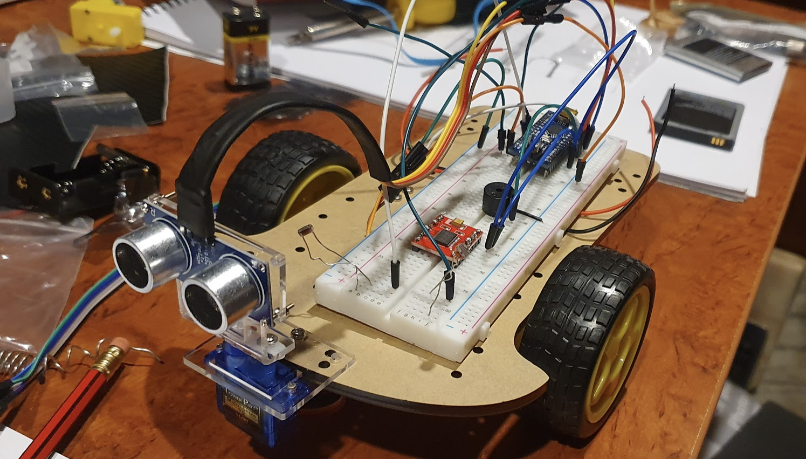
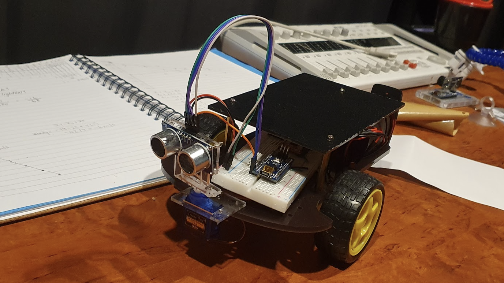


Discovered the importance of "Divide and Conquer" - reducing into smaller parts and adding incrementally.
Learnt how to overcome problems encountered by using components with low quality assurance. Hobby DC motors are quite fickle it seems.
Gained hands on experience with creating and troubleshooting a robotic device without assistance.
The project overall inspired me to take an elective in circuit board design and move towards designing my own PCB's for use.
Inspired me to take the next step towards creating a Braitenberg Vehicle.